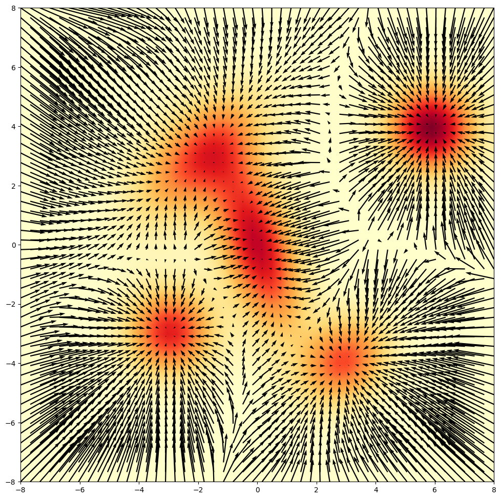
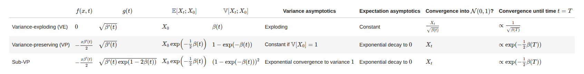
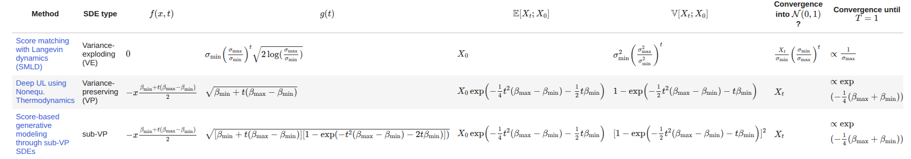

There are basically some sections i want to connect & establish a link btw them. First of them being langevin diffusion, see diffusion model rely on Stochastic differential equations & langevin is a specific SDE which is fundamental to understand diffusion. Another one is Ito-SDE we’ll cover it too.
What is Langevin diffusion??
Langevin diffusion has been discovered in physics to describe the motion of particles driven by random and deterministic forces. Due to the random forces, it is a stochastic process that in generative AI describes the evolution of a probability distribution over time.
Langevin diffusion is often used as a way to sample from a probability distribution p(x). Think of p(x) as a very complex high dimensional distribution that represents a dataset.
Gaussian mixture is given by a weighted sum of Gaussian distributions:
$$ p(\mathbf{x}) = \sum\limits_{j=1}^{n}q_j \mathcal{N}(\mathbf{x};\mu_i,\Sigma_{i}), \quad \text{where } q_j\in\mathbb{R},\sum\limits_{j=1}^{n}q_j = 1, \mu_i\in\mathbb{R}^2,\Sigma_{i}\in\mathbb{R}^{2\times 2} $$
namely the density, log-density, score (gradient of log_density), and gradient of the density.
$$ \begin{aligned} \mathcal{N}(x;\mu,\Sigma) &= \frac{1}{(2\pi)^{d/2}|\Sigma|^{1/2}} \exp\!\left(-\frac{1}{2}(x-\mu)^\top \Sigma^{-1}(x-\mu)\right), \\[6pt] \log \mathcal{N}(x;\mu,\Sigma) &= -\frac{d}{2}\log(2\pi) - \frac{1}{2}\log|\Sigma| - \frac{1}{2}(x-\mu)^\top \Sigma^{-1}(x-\mu), \\[6pt] \nabla_x \log \mathcal{N}(x;\mu,\Sigma) &= -\Sigma^{-1}(x-\mu), \\[6pt] \nabla_x \mathcal{N}(x;\mu,\Sigma) &= -\mathcal{N}(x;\mu,\Sigma)\,\Sigma^{-1}(x-\mu). \end{aligned} $$
Now in p(x) peaks are high-probability data (like clear images of cats) and the valleys are low-probability noise, the gradient of p(x) acts like a compass. So we use the score to "push" random noise toward the data peaks basically gradient ascent.
Why log is just mathematical convenience cause prob at points might be very low like in orders of -50 then that exponential term removal & since logarithm is a monotonically increasing function. This means that the peak of p(x) is in the exact same location as the peak of log p(x).
$$ \nabla_x \log p(x) = \frac{\nabla_x p(x)}{p(x)} $$
Langevin Diffusion describes a Stochastic Differential Equation.
$$ dX_t = \nabla\log p(X_t) + \sqrt{2}W_t $$
$$ X_{t+s} = X_{t}+s\nabla\log p(X_{t})+\sqrt{2s}\epsilon, \quad \epsilon\sim\mathcal{N}(0,\mathbf{I}_d) $$
Intuitively, the Langevin diffusion is gradient ascent maximizing the log-probability injected with random Gaussian noise.
Now the main thing is that actually we don’t know gradient for the clean data so now we’ll train a neural network (the Score Estimator) to predict the gradient of the noisy data.
What the hell is this ItoSDE??
SDE describes how one particle moves, if you simulate 10,000 particles at once, the density of where those particles end up will eventually match the probability distribution p(x).

Brownian motion:
$$ W_{t+s} = W_{t} +\sqrt{s} \epsilon,\quad \epsilon\sim\mathcal{N}(0,1) $$
ODE vs SDE:
$$ \frac{d}{dt}\mathbf{x}(t) = f(\mathbf{x}(t),t) $$
$$ dX(t) = f(X_t,t)dt+g(t)dW_t $$
$$ X_{t+s}|X_t\sim\mathcal{N}(X_{t}+s f(X_t,t),sg^2(t)) $$
deterministic drift f describes the infinitesimal change in mean and the volatility function g describes the infinitesimal standard deviation.
affine drift assumption:
$$ f(x,t)=a(t)x+b(t) $$
$$ \mathbb{E}[X_t|X_0] =\left(X_0+\int\limits_{0}^{t}\exp(-\int\limits_{0}^{s}a(r)dr)b(s)ds\right) \exp\left(\int\limits_{0}^{t}a(s)ds\right) $$
There are 3 frameworks to build SDEs for diffusion models: variance-preserving, variance sub-preserving and variance-exploding.
variance exploding:
$$ \mathbb{E}[X_t|X_0]=X_0,\quad \mathbb{V}[X_t|X_0]=\beta(t) $$
$$ Y_t=\frac{X_t}{\sqrt{\beta(t)}} $$
variance schedules:
$$ \sqrt{\beta(t)}=\sigma_{\text{min}}\left(\frac{\sigma_{\text{max}}}{\sigma_{\text{min}}}\right)^t $$
$$ \beta(t)=\frac{1}{2}t^2(\beta_{\text{max}}-\beta_{\text{min}})+t\beta_{\text{min}} $$
reverse-time SDE:
$$ d\bar{X}_t= [f(X_t,t)-g^2(t)\frac{\partial}{\partial x}\log p_{t}(\bar{X}_t)]dt + g(t)d\bar{W}_t $$
$$ \bar{X}_{t-s} \approx \bar{X}_t +s\left[g^2(t)s_{\theta}(\bar{X}_t,t)-f(\bar{X}_t,t)\right]+\sqrt{s}g(t)\epsilon $$
. . . to be continued